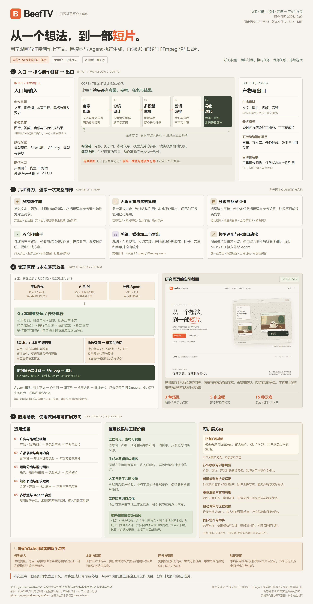

三种创作方式
- 桌面界面：手动建立节点、导入素材、选模型、提交任务、编辑时间线。
- 内置 Pi 助手：自然语言结合画布与媒体上下文，通过受控工具操作；付费媒体生成先提出方案，再由界面确认。
- 外部 Agent：通过 MCP / CLI 接入已开放业务操作，使用客户端自身审批流程。
OPEN SOURCE, OPEN POSSIBILITIES 研究 / 006
让文案、参考图片和模型，在一张画布上相遇。
BeefTV 将生成、组织与剪辑，连接成可持续修改的创作流程。
点击节点，看看它在创作流程中负责什么。
生成只是一步。 把过程连接起来，才成为工作流。
想法 → 分镜 → 素材 → 剪辑 → 成片A / START WITH THE WHOLE PICTURE
沿用本次对话生成的原图，完整呈现入口、出口、能力、原理、效果、场景与扩展。
在一张画布中保存创作上下文，用模型生成镜头，用工具修改素材，用时间线组织表达，再导出成片。
画布承载文案、图片、视频、音频和引用关系。它的价值还包括任务调度、资产持久化、助手与自动化入口，以及生成后的剪辑交付。

B / INPUT → WORKSPACE → OUTPUT
从人工操作到 Agent 接入，最终都落到同一套本地创作业务。
文案或图片可以作为起点。 从它们走到最终视频，还需要选择模型、组织镜头、检查生成结果和编排时间线。自然语言能推动已开放的业务工具；精确动作和画面质量要由对应模型与后续编辑实现。
01 / THE CREATIVE FLOW
选一个场景，逐步探索从输入到交付的过程。
以下为交互讲解，不会请求模型或产生费用。
A LITTLE PREVIEW
播放的是分镜顺序与字幕示意。实际成片需要在 BeefTV 中生成素材并渲染。
02 / THE CAPABILITY MAP
BeefTV 组织创作流程；你接入的模型，
决定具体的生成能力与画面质量。
接入文本、图片、视频与音频服务，让不同模型各司其职。
节点承载内容，连线表达参考关系。让灵感、素材和结果有迹可循。
拆解镜头、统一提示词和参考素材，批量组织多个生成任务。
读取画布与媒体，修改节点和时间线，提出可确认的生成方案。
裁切、排序、调整音量与字幕，将镜头编排成可播放、可下载的作品。
自定义模型渠道与协议，通过 CLI / MCP 将创作接入外部 Agent。
你可以控制提示词、参考素材、模型支持的参数、镜头编排与时间线。人物一致性、动作准确度和生成质量仍取决于模型，精确能力需要按渠道验证。
C / MODULES & RESPONSIBILITIES
按职责归纳现有实现，便于判断二次开发应进入哪一层；这不是上游官方的模块数量。
| 职责模块 | 主要组成 | 原理与边界 | 依据 |
|---|---|---|---|
| 界面与画布 | React / Wails、节点与连线、素材预览、画布助手入口。 | 保存创作上下文与参考关系；网格空间索引减少视口查询范围。画布表达的关系并不自动等于任意工作流执行。 | 查看 ↗ |
| 项目、素材与存储 | Go API、SQLite 元数据、本地资源目录。 | 关联项目、资源与任务，校验素材归属；浏览器环境有 IndexedDB 降级路径。默认桌面工作区为单用户。 | 查看 ↗ |
| 模型目录与协议适配 | 模型元数据、参考素材合同、协议 Adapter。 | 统一创建、查询、取消的请求与响应接口；按渠道处理参考媒体传输。模型发现成功不证明生成已验证。 | 查看 ↗ |
| 异步任务与结果回收 | 准入、队列、worker、轮询、状态、下载与结果绑定。 | 把远端生成转换为可追踪本地任务；宿主负责凭据、出站规则、执行租约、恢复和资产回收。具体重试/取消以接口为准。 | 查看 ↗ |
| Pi 助手与 Skills | 本地 agent-host、Pi Durable、新旧会话兼容、业务工具桥。 | 读取上下文 → 规划 → 工具调用 → 观察结果 → 继续；选定 Skill 文件可读。没有默认开放任意 shell 或脚本执行。 | 查看 ↗ |
| 操作层与自动化入口 | 鉴权的 /api/ops、工具权限范围、版本与操作标识、CLI / MCP。 | 统一节点、媒体、项目、任务、时间线等已接入操作；Go 管理版本校验、幂等与撤销。助手工具目录不覆盖所有界面功能。 | 查看 ↗ |
| 媒体工具与时间线 | 裁剪、截取、合并、音频工具；Go 剪辑计划、FFmpeg / ffprobe。 | 时间线统一内容语义，native / wasm 分别执行；画布单独媒体工具有自身 FFmpeg 路径，不能全部归为同一时间线编译器。 | 查看 ↗ |
| 插件与扩展接缝 | 前端插件、编辑器组件、协议接口、模型合同、业务工具目录。 | 为新渠道、编辑工具与自动化提供接入点；需完成前后端合同、权限、持久化与测试，接入点不代表成品功能已存在。 | 查看 ↗ |
03 / UNDER THE CANVAS
看懂职责分工，就能判断它适合如何使用，
以及哪些部分值得二次开发。
选择一种操作方式
React / Wails · 节点、参考素材、时间线
素材归属 · 版本校验 · 任务持久化 · 结果绑定
SQLite + 资源目录
保存项目、画布、素材与任务
创建请求 → 查询任务 → 下载结果
按渠道处理素材和参数
原生执行器 / 浏览器 wasm，按剪辑计划输出成片
本地优先工作区数据在本机保存；生成时，相关提示词和参考媒体可能发送给所配置的供应商。
有状态的助手Pi 管理会话执行，Go 管理权限、业务回合、去重与撤销。内置助手的付费媒体生成由界面确认。
D / FROM INTENT TO EXECUTION
工作台负责组织与执行；外部模型负责生成内容，FFmpeg 负责把编辑决定落实到成片。
能控制模型选择、输入与受支持参数；无法据此保证人物一致、动作准确或文字无误。
模型合同与任务过程 ↗新会话使用 Pi Durable 的 SQLite 持久化；已有 JSONL 由 Pi Coding Agent SessionManager 兼容。任务取消/重试等并非全部开放为助手工具。
Pi 与宿主职责 ↗这是确定性剪辑能力；高级逐像素合成、自动精确口型与任意特效仍需新增实现或外部工具。
剪辑计划与生产执行路径 ↗E / USE CASES & OBSERVABLE RESULTS
区分本页的交互示意、上游维护者的真实验收，以及尚未复现的效果。
3 个场景、5 个环节、15 秒分镜/字幕示意、时间轴定位、3 种架构入口与流程卡下载。画面是原创 SVG，播放由网页动画实现。
v1.7.14 定向验收记录报告：macOS arm64 候选版经助手确认生成 4 张图片、8 段视频；15 秒阅读短片首版与修订版，包含渲染、播放和下载。
阅读维护者记录 ↗未启动上游桌面应用、未配置密钥或付费生成。尚未验证全部渠道、操作系统、长片稳定性、端到端性能和商业收益。
| 场景 | 输入与动作 | 预期交付 | 效果检查 |
|---|---|---|---|
| 品牌与产品短片 | 卖点文案、产品参考、视觉风格 → 分镜节点、多个模型任务 → 调整节奏与字幕。 | 广告草稿、产品展示视频、可复用镜头素材。 | 检查产品外观、品牌字样、镜头一致性和真实卖点；本页咖啡/产品场景为原创流程示意。 |
| 短剧与视觉预演 | 剧本、角色和场景参考 → 镜头拆解、图片/视频版本 → 片段编排。 | 视觉分镜、镜头提案、短剧预演片。 | 人物与动作连续性由模型和人工检查决定；不能推断长片可全自动稳定完成。 |
| 知识与倡议传播 | 知识提纲、旁白/声音、参考媒体 → 素材生成与字幕 → 时间线修订。 | 短知识片、阅读倡议、活动传播片。 | 上游维护者记录过 15 秒阅读短片两版修订；内容准确性与声音授权需按项目检查。 |
| 多模型与 Agent 实验 | 模型渠道、样例素材、任务目标 → 手动/Pi/外部 Agent → 状态和结果观察。 | 可比较的资产、任务记录、自动化工作流原型。 | 比较效果、失败与成本需建立自己的样例和记录；不能把返回任务 ID 当作效果验证。 |
| 素材复用与迭代交付 | 已有图片、视频、声音与画布 → 重新裁切/排序/配音/字幕 → 再次导出。 | 新版本视频与保留上下文的工作区。 | 目前为本地单用户；团队共享、统一资产权限与冲突处理需要进一步建设。 |
F / PRODUCT & ENGINEERING VALUE
用户获得创作闭环，开发者获得可研究的职责划分；实际收益需要项目数据验证。
文案、参考、节点、任务和结果放在同一工作区，便于理解素材怎样进入作品。
适合多镜头与多版本比较，减少靠文件名和记忆维护关联。生成结果回收到本地资产，接着进入编辑与导出，保留可修改过程。
价值落在从想法到交付的连续工作，而不仅是一次生成。手动界面和业务工具共享对象，助手参与读取、组织、修订和执行。
用户可决定方向、批准生成并检查结果；工具开放范围需核对。用目录、合同和协议适配隔离供应商差异。
利于模型比较和迁移；新渠道仍需真实任务及媒体合同验证。本地存储保留资源、任务与会话，操作层维护版本、回执和幂等。
为排查、再编辑和自动化提供基础，不等于已完成企业审计系统。Go 管业务语义、Pi 管助手循环、FFmpeg 管执行，接口有明确职责。
可复用在其他媒体工作台；本研究没有测量时间节省、ROI 或广告转化。G / EXTENSION POINTS → PROPOSED WORK
以下是基于源码职责的扩展建议；验收条件说明怎样把设想变成可验证成果。
图中的扩展与以上建议均不表示已经实现。评估二次开发，应同时考虑模型成本、本机渲染资源、媒体合同、数据持久化、操作权限和失败恢复。
04 / NOTES & SOURCES
RESEARCH BASELINE
能力判断来自源码、文档及维护者验收记录；本项目尚未运行上游桌面版或验证付费生成。版本文件不等于发行状态。
本页是原创研究展示，不是 BeefTV 应用。场景、画布和播放均为交互示意；实际生成需要安装 BeefTV、配置模型渠道并提交任务。本页不收集密钥。
功能清单保留了旧内置 Agent 的退场说明，但此研究提交已经包含 Pi 宿主、画布助手入口及对应验收记录。文档更新不同步，因此本页以固定提交的代码与较新的版本验收记录共同判断。
适合短视频与广告草稿、产品展示、视觉分镜预演，以及多模型工作流实验。当前桌面版定位为单用户本地工作区；团队同步和托管计费等旧文档内容不属于本地版范围。